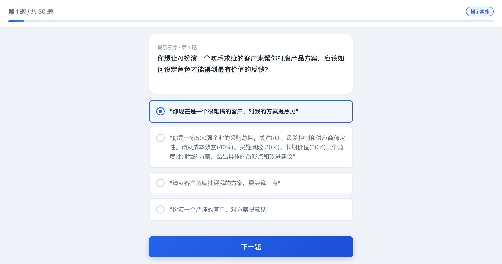
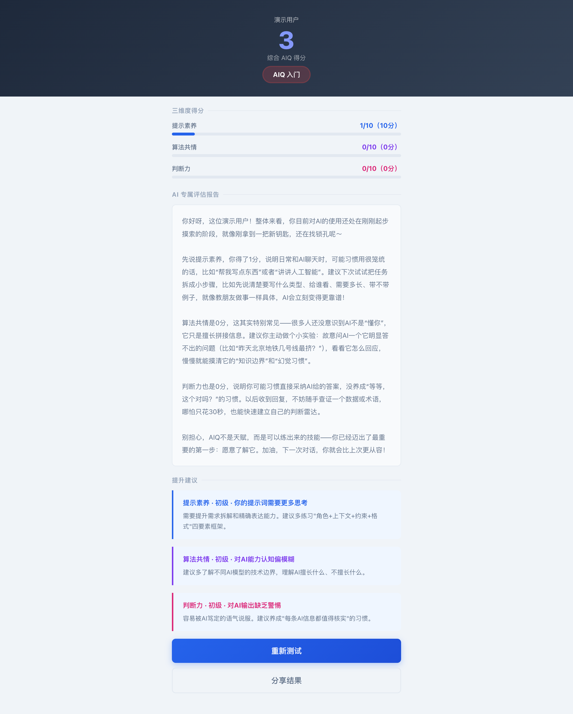

上周末跟一个做产品的朋友吃饭，聊到最近用AI的感受。
他说了句话让我印象挺深的——"我现在AI用得越久，越发现自己提需求的能力跟不上。"他说他团队里有个刚毕业的小孩，同样的AI工具，产出质量比他高一大截。不是技术的问题，是"喂"的方式不一样。
这其实不是个例。你观察一下身边那些"AI用得特别好"的人，他们是不是都有一个共同点——不是工具用得熟，而是跟AI沟通的效率高。
这就引出了一个问题：能不能衡量一个人跟AI协作的能力？有没有一套标准，可以用来评估你"跟AI打交道"的水平？
还真有。今年有两篇研究都在聊一个概念——AIQ（Artificial Intelligence Quotient），也就是"AI商"。一篇是 arXiv 上的框架论文（2503.16438），另一篇是 ResearchGate 上的GLAT相关研究。两篇不约而同地把AIQ拆成了三个维度：
对，就这三个。不是智商，不是情商，是"你跟AI配合得好不好"。
下面我一个个掰开聊，每个维度都配了实操案例——都是实际工作中遇到过的场景。你看的时候可以顺便想想：换成你，你会怎么做？
一、提示素养——你脑子里有想法，能不能告诉AI
这个维度最"表面"，但也最容易拉开差距。
很多人以为提示素养就是"写prompt"，其实它背后是需求拆解能力——你能不能把一个模糊的想法，变成AI能理解的具体指令。
对，你可能会说——这不就是"skill"（技能）吗？你说得对。提示素养本来就不仅仅是写一段提示词，它还包括你怎么搭建对话脉络、分步骤引导AI、在AI跑偏时把它拉回来、甚至怎么调整参数配合你的需求。说白了，它是你跟AI打交道的整套技能，写prompt只是其中最表层的那一步而已。很多人把提示素养窄化成"写一段话"，其实是低估了这件事的深度。
举个很常见的例子。你让AI写一份行业分析报告，给了句"帮我写一份新能源汽车市场分析"。AI给你吐了一堆通用套话，你看了觉得"好像啥都说了又好像啥都没说"。
问题在哪？需求太宽了。没有角色、没有范围、没有格式、没有约束。
换一种方式：
你是一位资深汽车分析师。请基于公开财报，对比比亚迪、特斯拉、蔚来在2026年Q1的销量变化。输出格式：先给一句核心结论，然后分三点展开，每点200字以内。
看到区别了吗？给了角色（汽车分析师）、范围（三家公司的Q1财报）、格式（结论+三点）、字数约束。AI拿到这些东西，产出质量完全不同。
提示素养的本质，就是你把大脑里的模糊需求翻译成精确指令的能力。这个能力越强，跟AI合作的效率就越高。
巧了，我们的测试题里一道典型的"提示素养"题是这样的——你看你能选对吗？

▲ 这是我们自测题的一道提示素养题——测测你的直觉准不准
二、算法共情——你知道AI擅长什么、不擅长什么吗
这个维度是我觉得三个里面最有意思的。"算法共情"听起来很玄，其实就是——你对AI的能力边界有没有一个清醒的认知。
大部分人用AI走两个极端。一种是"万能论"——啥都往AI里扔，让AI做情感分析、做微表情识别、预测股价。另一种是"怀疑论"——啥都不信AI，AI写了的东西全要推翻重来。
两种都有问题。真实情况是这样的：
✓ 文本类 写文案、翻译、头脑风暴、写代码——AI很擅长，甚至超过大多数人。
△ 数据类 分析表格、做统计——AI能做，但需要你给清晰指引，结果要自己验证。
✗ 情感类 微表情判断、讽刺识别、潜意识分析——AI极度不擅长，甚至不如普通人。
举个例子。你让AI"分析一下这张照片里每个人的微表情，判断谁在说谎"。这个需求听起来很酷，但是——AI连真假笑都不一定分得清楚，你要它做微表情测谎？这就相当于让会计去写文案，不是一个工种。
算法共情差的典型表现还有：
- 让AI分析历史股票数据预测下周涨跌——AI可以分析趋势模式，但股市受政策、消息、情绪影响，短期预测根本不可靠
- 直接采用AI给出的具体数据不加验证——AI知识有截止日期，实时数据它会直接编
- 把长文档整篇扔给AI让它"全部看完"——AI有上下文窗口限制，超出会直接丢失信息
说白了，算法共情就是你知道AI这个"员工"适合干什么活儿。这个认知越清晰，你跟AI的分工就越合理。
▲ 这套自测题的欢迎页——30道场景题，测你三个维度的水平
三、判断力——AI给了你一堆东西，你能辨别好坏吗
这个维度可能是三个里面最重要的。
AI生成内容的速度很快，快到你的大脑来不及判断"这玩意儿对不对"它就出来了。但问题就在这里——AI是概率模型，不是搜索引擎。它经常用非常自信的口吻，说出完全错误的信息。
这种现象叫"幻觉"（Hallucination）。比如你问AI某公司2025年营收，它可能给你一个具体的数字，格式完美、语气笃定——但如果你去查财报，发现这个数字从来不存在。
事实上，我们的测试题里有一道典型的判断力题：
AI说"根据XX机构2026年预测，全球AI市场规模将达到5000亿美元"。但实际上该机构的预测是3000亿美元。这属于什么类型的AI局限？
答案是典型的AI幻觉——AI用自信的语气编造了看起来合理但实际错误的信息。
判断力体现在这几个方面：
1事实核查——AI说的关键数据，你能不能识别出可疑的地方并去验证
2逻辑验证——AI的推理过程有没有前后矛盾的地方
3迭代引导——发现问题后，你能不能告诉AI"这里不对"并给出修正方向
如果你自己不具备基本的辨别能力，AI的"高效率"反而是一种危险——你会在更短的时间内，产出更多表面正确但实际有问题的东西。
三个维度，缺一不可
提示素养好，你才能让AI产出你想要的东西。
算法共情好，你才能让AI做它擅长的事、避开它的短板。
判断力好，你才能确保最终的结果是靠谱的。
缺一个都不行。
提示素养差——AI给你的永远不是你想要的。
算法共情差——你让AI干它干不了的事，浪费时间。
判断力差——AI给你错了的东西，你直接拿去用，还觉得挺好。
所以我才做了这套自测题——基于这三个维度，每个维度10道场景题，一共30题。没有是非题，没有显而易见的答案，全部是真实工作场景。做完了你会收到一份个性化报告：综合得分、三个维度的得分、AI评估和建议。
就在我自己测的那一遍，我发现——我一直以为自己的"算法共情"挺好的，结果分数是最低的。原来我对AI图像能力的预期太高了，这就是认知偏差。

▲ 提交后你会得到这样一份报告——综合得分、三维度分析、AI评估报告和提升建议
这里也分享几个提升AIQ的小建议，你可以直接用：
1学一下"四要素"prompt框架：角色 + 上下文 + 目标 + 输出格式。你的prompt质量至少提升50%。
2养成"每条AI信息都值得核实"的习惯：关键数据、引用来源、具体日期——这些是AI最常"编"的内容。
3建立你的"AI能力地图"：花一天时间摸清楚——哪些事AI做得比你好，哪些事AI完全做不了。这张地图越清晰，你协作的效率越高。
4每次使用AI后做一次复盘：它这次产出好，好在哪？产出差，是prompt的问题还是它能力的问题？记下来，下次改进。
AIQ不是一成不变的。它跟你的经验正相关——你用AI越多、思考越深，你的AIQ就会自然提升。但前提是，你得先知道自己现在在哪。
所以，要不先测一下？
—— 完 ——
参考：arXiv:2503.16438 · GLAT (Jin et al., 2024) · ResearchGate AIQ Framework